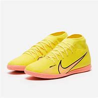
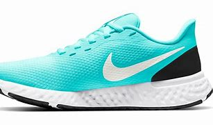
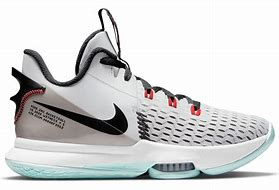
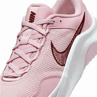
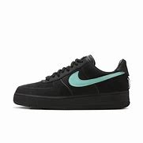

Historia de Nike
Fundada en 1964 como Blue Ribbon Sports, Nike, Inc. es una de las marcas deportivas más icónicas y reconocidas en el mundo. En 1971, el nombre de la empresa cambió a Nike, inspirado en la diosa griega de la victoria. Desde su comienzo, Nike se ha destacado por su innovación en productos deportivos, especialmente en calzado, ropa y equipo deportivo. A lo largo de los años, ha patrocinado a atletas de renombre y ha mantenido su compromiso con la excelencia y el rendimiento en los deportes.
En la actualidad, Nike es sinónimo de calidad, estilo y tecnología avanzada, siendo líder en la fabricación de calzado deportivo para diversas disciplinas como fútbol, baloncesto, running, entre otros.
Tipos de Calzado de Nike
| Tipo de Calzado | Descripción | Imagen |
|---|---|---|
| Fútbol | Las botas de fútbol Nike están diseñadas para ofrecer velocidad, tracción y confort en el campo. Usadas por futbolistas profesionales. |  |
| Running | El calzado de running Nike combina ligereza y amortiguación para corredores de todos los niveles, brindando comodidad en largas distancias. |  |
| Baloncesto | Las zapatillas de baloncesto Nike ofrecen soporte, estabilidad y agarre para los movimientos rápidos y los saltos en la cancha. |  |
| Entrenamiento | El calzado de entrenamiento de Nike está diseñado para resistir las exigencias del entrenamiento intenso, proporcionando comodidad y resistencia. |  |
| Casual | Las zapatillas casuales de Nike combinan estilo y comodidad para el uso diario, con diseños modernos y materiales de alta calidad. |  |
Innovaciones en el Calzado Nike
Nike ha sido pionera en el desarrollo de tecnologías de calzado, entre las que destacan:
- Air Max: Una innovadora tecnología de amortiguación con una cápsula de aire visible, que ofrece confort y soporte en cada paso.
- Flyknit: Un material ligero y flexible que se adapta perfectamente al pie, proporcionando soporte donde más se necesita.
- Zoom: Tecnología de amortiguación reactiva que proporciona mayor velocidad y respuesta durante actividades de alta intensidad.
- React: Suela que ofrece una experiencia de comodidad y flexibilidad superior para los atletas que buscan rendimiento sin sacrificar confort.